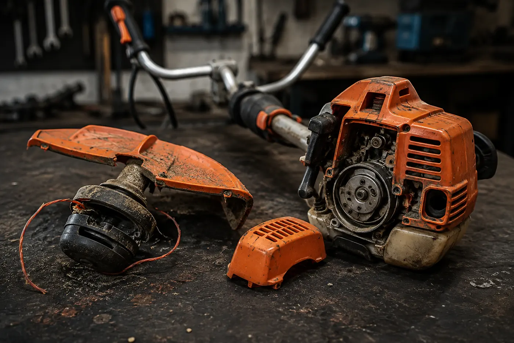
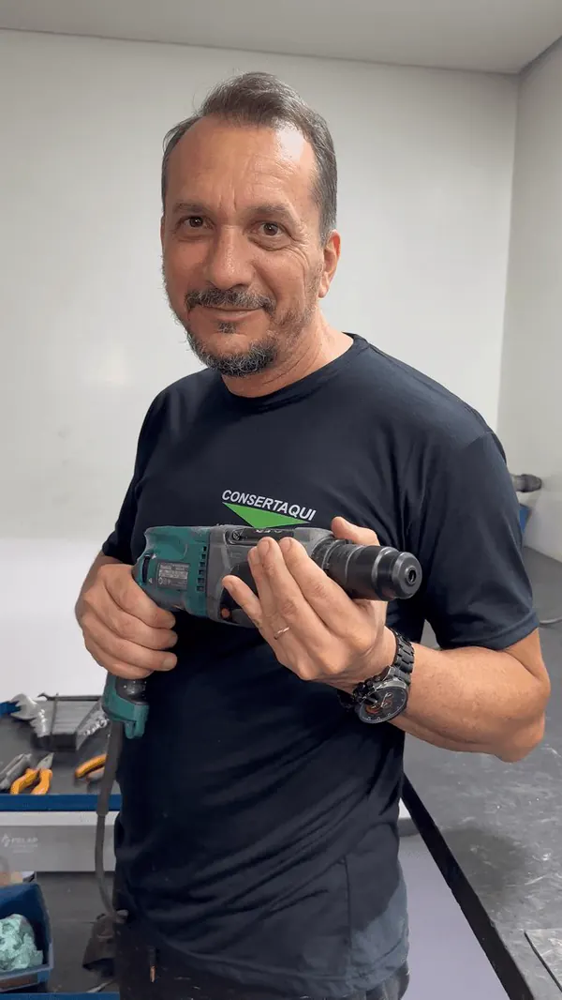
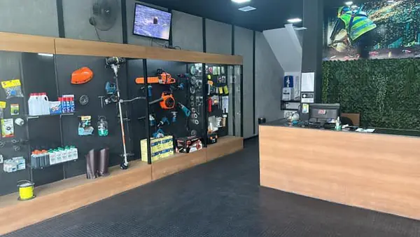
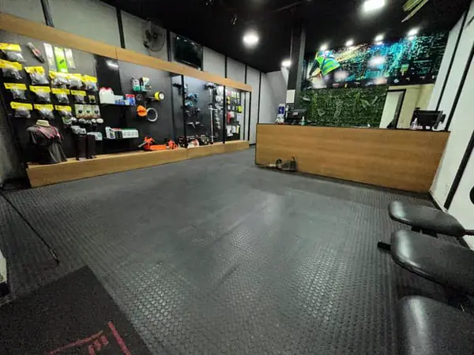
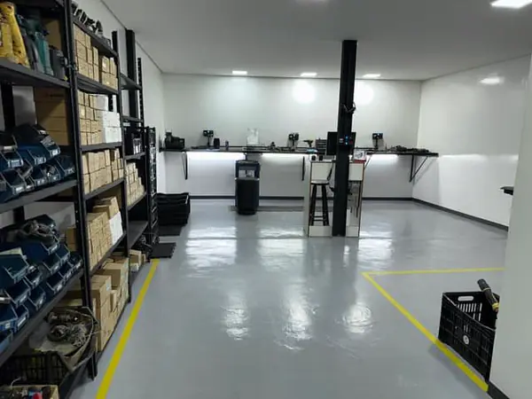
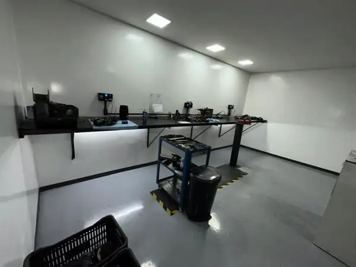

Carburador e regulagem
Limpeza completa, kit de reparo, diafragma, agulha e regulagem de marcha lenta e alta. É o serviço número um da casa.
Roçadeira é a nossa especialidade há 12 anos. Chama no WhatsApp que a gente combina o melhor dia pra você trazer a sua.

Acha o seu caso na lista e toca. O WhatsApp abre com o seu problema já escrito, e a gente combina o dia de você trazer.
Corda vai e volta e o motor não acorda. Quase sempre é vela, bobina, combustível velho ou carburador entupido pela gasolina parada.
Chamar no WhatsAppChamar Pega e morre em seguidaLiga, roda uns segundos e apaga. Carburador desregulado, filtro sujo ou o respiro do tanque entupido segurando o combustível.
Chamar no WhatsAppChamar Sem força no mato altoCorta grama fina, mas morre no mato grosso. Compressão caída, carburador fora do ponto ou escapamento entupido de carvão.
Chamar no WhatsAppChamar Fumaça demais e cheiro forteFumaça branca ou azul saindo sem parar. Mistura de óleo errada, anel do pistão gasto ou excesso de óleo no cárter.
Chamar no WhatsAppChamar Carretel não solta o fioBate no chão e o fio não sai, ou arrebenta a cada minuto. Carretel gasto, mola solta ou fio de bitola errada pro seu modelo.
Chamar no WhatsAppChamar Lâmina não corta ou tremeCorte irregular e vibração na hora que encosta. Lâmina cega, empenada ou desbalanceada. A gente afia e balanceia.
Chamar no WhatsAppChamar Acelera e a cabeça não giraMotor sobe de giro mas o fio fica parado. Embreagem patinando, sapata gasta ou eixo flexível rompido lá dentro.
Chamar no WhatsAppChamar Vibração forte no caboChega a dormir a mão depois de meia hora. Coxim vencido, rolamento com folga ou eixo torto. Trabalhar assim machuca e quebra mais.
Chamar no WhatsAppChamar Partida travada ou corda arrebentadaRetrátil não volta, corda saiu do lugar ou a mola soltou. Serviço barato, e é o que mais deixa gente parada no meio do serviço.
Chamar no WhatsAppChamar Vazando combustívelCheiro de gasolina e poça embaixo. Mangueira ressecada, pescador do tanque, retentor ou trinco no tanque. Risco de incêndio, não use.
Chamar no WhatsAppChamar Esquenta e trava no meio do serviçoRoda 20 minutos, esquenta e trava. Falta de lubrificação, mistura pobre ou aletas de refrigeração entupidas de mato.
Chamar no WhatsAppChamar Elétrica ou a bateria que parouNão liga na tomada, gatilho sem resposta ou bateria que carrega e acaba em minutos. Também atendemos os modelos sem gasolina.
Chamar no WhatsAppChamarAchou o seu caso? A gente responde rápido pra combinar o dia.
Chamar no WhatsApp agoraE isso é de propósito. Roçadeira só tem diagnóstico com ela aberta na bancada. Quem chuta valor por descrição erra, e erra pra cima.
Roçadeira não sai daqui "deve estar boa". Sai testada, ligando na primeira ou segunda puxada, acelerando limpo e cortando mato de verdade.
A gasolina, elétrica ou a bateria. Lateral, costal ou de rodas. Todas as marcas.
Limpeza completa, kit de reparo, diafragma, agulha e regulagem de marcha lenta e alta. É o serviço número um da casa.
Anel, pistão, cilindro, retentor e junta. Quando a força some de vez, é aqui. A gente mede a compressão antes de falar preço.
Bobina, vela, cabo, corda, mola e a carcaça da partida retrátil. Serviço rápido e o que mais tira gente do prejuízo no mesmo dia.
Sapata, sino, eixo flexível, bucha e o cabeçote de corte. Resolve o clássico "acelera e não gira".
Troca de carretel, fio na bitola certa, lâmina nova, afiação e balanceamento. Sai cortando na hora.
Motor, gatilho, chave, cabo, bateria e carregador. Os modelos sem gasolina também têm conserto aqui.
Vai começar a temporada de mato? Manutenção preventiva antes da chuva custa uma fração do conserto depois que ela trava no meio do serviço.
Agendar revisãoVocê chama
no WhatsApp
A gente combina
o dia de você trazer
Abrimos e testamos
e aí sim sai o valor
Você aprova
e leva funcionando
O passo 1 leva menos de um minuto. Só dizer qual é a ferramenta.
Começar pelo passo 1
Não é balcão que despacha pra terceiro. Quem recebe, diagnostica e devolve funcionando é o dono da oficina, com 12 anos e mais de 40 mil ferramentas nas mãos.
É por isso que ele não passa preço por telefone. Ferramenta se diagnostica aberta na bancada, não por descrição. Quem chuta valor no WhatsApp erra pra cima, ou corrige pra cima depois que você já deixou.
Falar com o MaurícioSua ferramenta não vai pra um canto de garagem. Vai pra uma bancada preparada.
Combinar de levar



"Ótimo atendimento, preços justos e rapidez no atendimento. Recomendo!"
"Bom atendimento, serviços de primeira qualidade, tem o meu respeito! Parabéns a todos!"
"O dono é ótima pessoa, o serviço é de primeira qualidade. 100% recomendo."
"Ambiente agradável, bom atendimento e ótima prestação de serviço."
"Ótimo atendimento. Ótima prestação de serviços. Preço compatível nas manutenções."
Quer ser o próximo a sair daqui satisfeito?
Pedir meu orçamentoFicou uma dúvida que não está aqui? Pergunta no WhatsApp, a gente responde.
Tirar minha dúvidaGarantia no serviço, todas as marcas e resposta rápida no WhatsApp pra combinar o dia.
Chamar no WhatsAppTem outra ferramenta parada também?
Ver todos os serviços